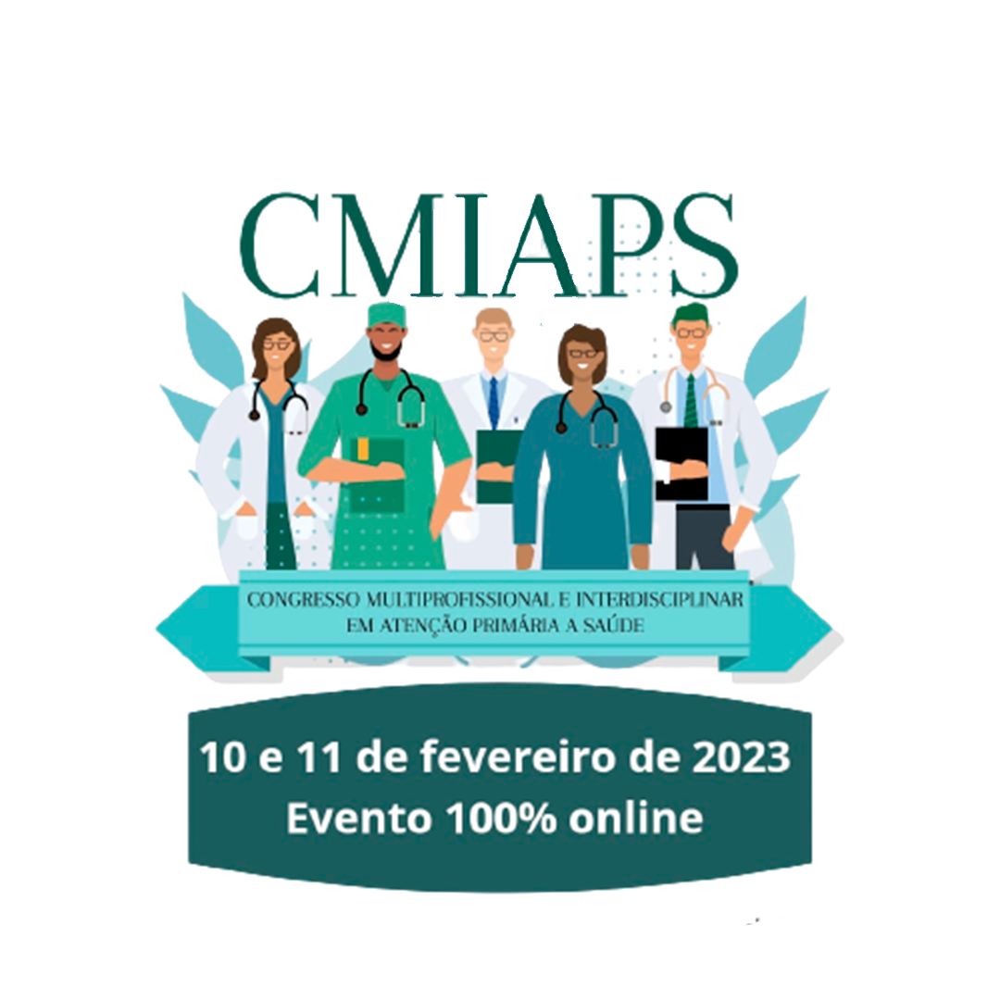

<!DOCTYPE html>
<html lang="en">
<head>
  <meta charset="UTF-8">
  <meta http-equiv="X-UA-Compatible" content="IE=edge">
  <meta name="viewport" content="width=device-width, initial-scale=1.0"> 
  <link rel="stylesheet" href="style.css"> <link rel="stylesheet" href="meida.css" media="screen">

  
</html>
  
  <title>Document</title>
</head>
<body>
  <header class="he" id="hear" >
    <H1 class="congresso">II congresso multiprofissional e interdisciplinar em atenção primária a saúde CMIAPS
    </H1>
    <p>Congresso Multiprofissional E Interdisciplinar</p>
  </header>
  <main>

<section class="bac" id="bac">
  
</section>
<section class="viv" id="bac" >
  <div class="vivt">
    <h1> transmisão ao vivo</h1>
  <p class="colir"> dia do evento 10 e 11 de fevereiro</p>
  </div>
  <div>
    
  </div>
  <p class="tivo">Palestrantes Renomado de todo o Brasil;<br>
    - Roda de conversa (mesa redonda);<br>
    - Minicursos de aperfeiçoamento <br>
    - Certificados a serem entregues: <br>Participação (ouvintes) com 70h,<br> minicurso 10h (cada minicurso). <br><br>
    Evento teórico-cientifico destinado<br> Apresentação de trabalhos:<br>
    Resumos Simples (pôster)<br>
    Resumos Expandidos <br>(Pôster ou Comunicação oral) e<br>
    Capítulo de livro.<br> (E-BOOK com DOI GERAL,<br> DOI INDIVIDUAL, FICHA CATALOGRÁFICA E ISBN)
    </p>
    
  
</section>
<section class="" id="bac">
  <div class="ins">
    <h1 class="inscr"> faça sua inscrição agora</h1>
   
    <a href="https://doity.com.br/cmiaps2023#registration"><button class="agora">fazer inscrição</button></a>
   </div>
  
</section>


<section id="bac">
  <div class="dados1">
    <h4> Veja tudo o que você vai levar<br>
    ao se inscrevar no nosso evento</h4>
    
 
    <p class="publico">pensado com a intenção de despertar no seu público
      especifico um olhar sistêmico e inovador acerca do atual cenário da saúde pública brasileira.<br>
     
      Buscou-se por meio de suas palestras temáticas e minicursos.
      você  recebera um Certificados valido em todo territorio nacional</p>
       
      
      <a href="https://doity.com.br/cmiaps2023#registration"><button class="it">fazer inscrição</button></a>
</section>
<section class="coli" id="bac">
 
 <div class="liy"><h4> para quem é esse evento</h4>
  <p> O evento é destinado a Todos os acadêmicos e  profissionais da saúde.
  </p>
</div>

</section>
<section
class="noses" id="bac">
 <div class="omo">
  <h1> sobre nos </h1>
  <p>O Instituto Publicações acadêmicas, surgiu com o propósito de despertar o olhar de alunos e profissionais ao meio científico por intermédio do incentivo ao auto-crescimento no perfil científico e da pesquisa.</p>

 <a href="https://doity.com.br/cmiaps2023#registration">
   <button class="it">
    adquirir agora minha inscrição
   </button>
 </a>
</section>
<section></section>

  </main>
 
</body>
</html>